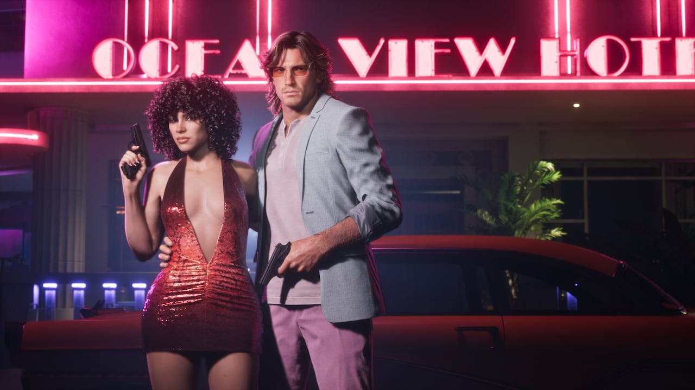

© Rockstar Games / Take-Two Interactive
Précommandes ouvertes : 79,99 $ / 99,99 $
EN BREF
- Ouverture : 25 juin 2026
- Standard : 79,99 $ — Ultimate : 99,99 $
- Bonus : Vintage Vice City Pack si précommande avant le 20 novembre 2026
- Take-Two : des précommandes qui ont « largement » dépassé ses prévisions
Les précommandes de GTA 6 ont ouvert le 25 juin 2026, avec deux éditions : Standard à 79,99 $ et Ultimate à 99,99 $, sur PS5, PS5 Pro, Xbox Series X et Series S.
Ce prix de 79,99 $ pour l'édition standard marque une hausse par rapport aux 69,99 $ habituels des jeux AAA de cette génération de consoles.
Standard ou Ultimate ?
L'édition Ultimate ajoute cinq boutiques exclusives, des véhicules, des armes et des activités supplémentaires — tout le détail dans notre article L'édition Ultimate et ses boutiques exclusives.
Le bonus de précommande
Toute précommande passée avant le 20 novembre 2026 donne accès au Vintage Vice City Pack, un ensemble d'objets en jeu inclus avec les deux éditions (tenues et motifs d'armes au style rétro).

Images : © Rockstar Games / Take-Two Interactive
Un démarrage « sans précédent »
Lors de ses résultats du 7 août 2026, Take-Two a indiqué que les précommandes — ouvertes seulement cinq jours sur le trimestre concerné — avaient connu un démarrage « exceptionnel ». Son PDG Strauss Zelnick a parlé d'un niveau « sans précédent » et a affirmé qu'elles avaient « largement » dépassé les prévisions internes, sans donner de chiffre.
Bon à savoir
- La version physique est fournie sous forme d'un code de téléchargement en boîte, et non d'un disque.
- Les produits dérivés se précommandent à part : manettes DualSense (84,99 $) et coffret The Goodtime State (399,99 $, jeu non inclus).